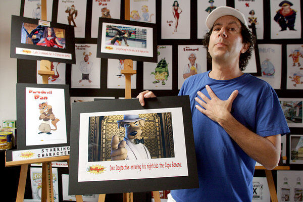
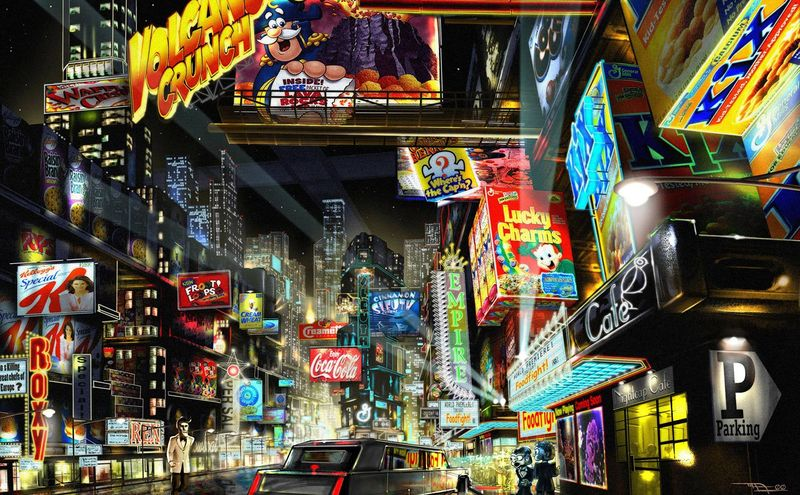

Al ver un poco de esta película estarás pensando: "seguramente un proyecto de pocas personas o con poco presupuesto".
Pues no, creas o no la película está hecha por el estudio Threshold Entertainment con un presupuesto de $US 45 000 000.
¿Pues entonces por qué el resultado mostrado arriba es tan desastroso? Debido a que la película mostrada
no es la original (supuestamente). Entonces ¿Dónde se encuentra? Se dice que el estudio fue asaltado, con la desaparición de los discos duros con el metraje original
obligándolos a hacer una nueva versión con todo el tiempo que disponían y los recursos sobrantes de la película original, dando como resultado, eso.
La trama es de productos y mascotas de marcas en un supermercado que cobran vida y tienen aventuras cuando no hay nadie que los vigile (parecido a Toy Story).
y en todas las críticas de usuarios la califican como un desastre (siendo bastante crueles, sólo hay que leer los comentarios en youtube que tienen).
¿Qué opinas? ¿Si saliera una versión pre-robo la verías? Mi opinión, probablemente no, el concepto en sí ya tiene pinta de ser un anuncio disfrazado de película.
por lo que para que algo así sea interesante se tendría que camuflar este hecho lo mejor posible
Fotos de concepto de la película antes del supuesto robo


Esta historia, sea verdadera o falsa nos deja una bonita moraleja: hacer copias de seguridad.